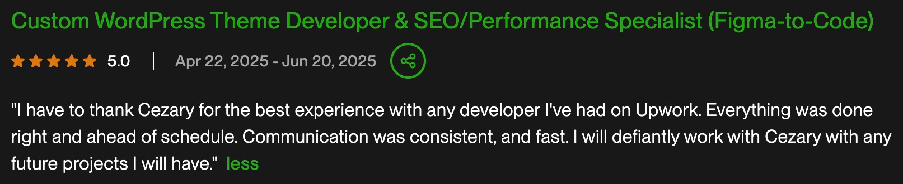
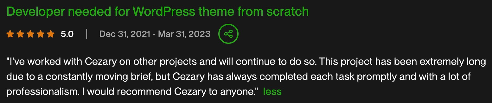
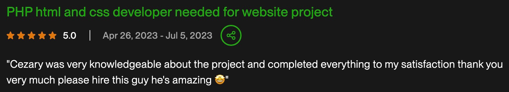

Cezary Siwa
Full Stack Developer
About Me
My journey into web development began when I was 12-back in the days when having an internet connection was a rarity. I taught myself HTML from CD-magazine tutorials and later contributed to the demoscene as a 3D graphician during high school. I went on to study Computer Science at Nicolaus Copernicus University in Toruń and started my first web development job in 2008 while still a student. For several years I worked with digital agencies, building bespoke solutions for a wide range of clients.
Since 2013 I’ve been a full-time freelancer on Upwork, specializing in WordPress and PHP, while also working with technologies such as Node.js, Python, and React. I’ve contributed products to CodeCanyon-although I eventually discontinued them, they were fully reviewed and approved by their team. Over the years, I’ve completed more than 1,000 projects on Upwork, totaling over $1M USD in contract work.
I’m a dedicated, hardworking freelancer who loves learning new technologies and taking on fresh challenges. I genuinely believe the internet is one of humanity’s greatest achievements, and I’m proud to contribute to its ongoing development.
Resume
Education
Nicolaus Copernicus University - Bachelor of Computer Science
2006-2010
Experience
2008 - 2013
Web Developer
During this time, I collaborated with several digital agencies, focusing on web development. I
gained experience translating designs into clean, responsive HTML/CSS and integrating them with
custom PHP-based CMS platforms.
2013
Freelancing
Since 2013, I have been working as a full-time freelancer, primarily focused on web development.
I’ve developed deep, core-level expertise in WordPress and have completed more than 1,000 projects
on Upwork. Not all of these were WordPress-based - I’ve also worked extensively with Node.js, React,
and Shopify. I maintain strong relationships with many returning clients, reflecting my commitment
to delivering high-quality work and reliable results.
Portfolio

Testimonials


